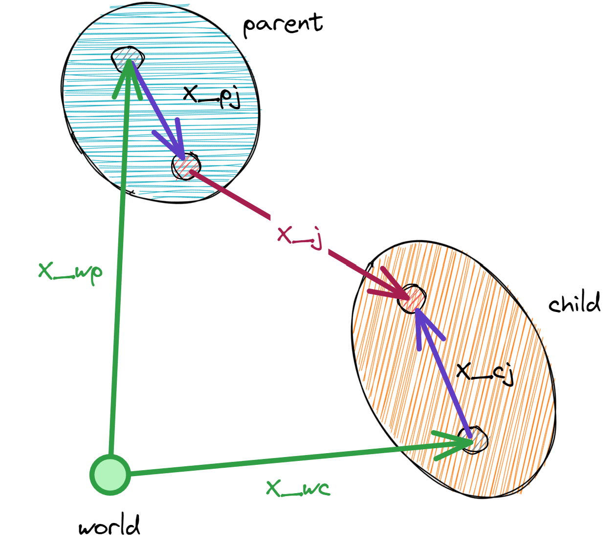

Articulations#
Articulations are a way to represent a collection of rigid bodies that are connected by joints.
Generalized and maximal coordinates#
There are two types of parameterizations to describe the configuration of an articulation: generalized coordinates and maximal coordinates.
Generalized (sometimes also called “reduced”) coordinates describe the configuration of an articulation in terms of joint positions and velocities.
For example, a double-pendulum articulation (two links serially attached to world by revolute joints) has two generalized coordinates corresponding to the two joint angles (newton.State.joint_q) and joint velocities (newton.State.joint_qd).
See the table below for the number of generalized coordinates for each joint type.
Note that for a floating-base articulation (which is connected to the world by a free joint), the generalized coordinates include the maximal coordinates of the base link, i.e. the 3D position and 4D orientation of the base link.
Maximal coordinates describe the configuration of an articulation in terms of the body link positions and velocities.
Each rigid body’s pose is represented by 7 parameters (3D position and XYZW quaternion) in newton.State.body_q,
and its velocity by 6 parameters (3D linear and 3D angular) in newton.State.body_qd.
To convert between these two representations we use forward and inverse kinematics:
forward kinematics (newton.eval_fk()) converts generalized coordinates to maximal coordinates, and inverse kinematics (newton.eval_ik()) converts maximal coordinates to generalized coordinates.
In Newton, we support both parameterizations and it is up to the solver which one to use to read and write the configuration.
For example, SolverMuJoCo and SolverFeatherstone use generalized coordinates, while SolverXPBD and SolverSemiImplicit use maximal coordinates.
Note that collision detection, e.g., via newton.Model.collide() requires the maximal coordinates to be current in the state.
To showcase how an articulation state is initialized using reduced coordinates, let’s consider an example where we create an articulation with a single revolute joint and initialize its joint angle to 0.5 and joint velocity to 10.0:
builder = newton.ModelBuilder()
# create an articulation with a single revolute joint
# (articulations are closed automatically by ModelBuilder.finalize())
builder.add_articulation()
body = builder.add_body()
builder.add_shape_box(body) # add a shape to the body to add some inertia
builder.add_joint_revolute(parent=-1, child=body, axis=wp.vec3(0.0, 0.0, 1.0)) # add a revolute joint to the body
builder.joint_q[-1] = 0.5
builder.joint_qd[-1] = 10.0
model = builder.finalize()
state = model.state()
# The generalized coordinates have been initialized by the revolute joint:
assert all(state.joint_q.numpy() == [0.5])
assert all(state.joint_qd.numpy() == [10.0])
While the generalized coordinates have been initialized by the values we set through the newton.ModelBuilder.joint_q and newton.ModelBuilder.joint_qd definitions,
the body poses (maximal coordinates) are still initialized by the identity transform (since we did not provide a xform argument to the newton.ModelBuilder.add_body() call, it defaults to the identity transform).
This is not a problem for generalized-coordinate solvers, as they do not use the body poses (maximal coordinates) to represent the state of the articulation but only the generalized coordinates.
In order to update the body poses (maximal coordinates), we need to use the forward kinematics function newton.eval_fk():
newton.eval_fk(model, state.joint_q, state.joint_qd, state)
Now, the body poses (maximal coordinates) have been updated by the forward kinematics and a maximal-coordinate solver can simulate the scene starting from these initial conditions. As mentioned above, this call is not needed for generalized-coordinate solvers.
When declaring an articulation using the ModelBuilder, the rigid body poses (maximal coordinates newton.State.body_q) are initialized by the xform argument:
builder = newton.ModelBuilder()
tf = wp.transform(wp.vec3(1.0, 2.0, 3.0), wp.quat_from_axis_angle(wp.vec3(0.0, 0.0, 1.0), 0.5 * wp.pi))
body = builder.add_body(xform=tf)
builder.add_shape_box(body) # add a shape to the body to add some inertia
model = builder.finalize()
state = model.state()
# The body poses (maximal coordinates) are initialized by the xform argument:
assert all(state.body_q.numpy()[0] == [*tf])
# However, the generalized coordinates are empty:
assert state.joint_q is None
In this setup, we have a body with a box shape that maximal-coordinate solvers can directly simulate given the initial body pose we defined above.
However, to be able to simulate the same scene using a generalized-coordinate solver, we need to add a free joint to connect the body to the world and make sure the system
has the degrees of freedom in generalized coordinates (newton.State.joint_q) we need:
builder = newton.ModelBuilder()
builder.add_articulation()
tf = wp.transform(wp.vec3(1.0, 2.0, 3.0), wp.quat_from_axis_angle(wp.vec3(0.0, 0.0, 1.0), 0.5 * wp.pi))
body = builder.add_body(xform=tf)
builder.add_shape_box(body) # add a shape to the body to add some inertia
builder.add_joint_free(body) # add a free joint to connect the body to the world
# The free joint's coordinates (joint_q) are initialized by its child body's pose,
# so we do not need to specify them here
# builder.joint_q[-7:] = *tf
model = builder.finalize()
state = model.state()
# The body poses (maximal coordinates) are initialized by the xform argument:
assert all(state.body_q.numpy()[0] == [*tf])
# Now, the generalized coordinates are initialized by the free joint:
assert len(state.joint_q) == 7
assert all(state.joint_q.numpy() == [*tf])
This scene can now be simulated by both maximal-coordinate and generalized-coordinate solvers.
Joint types#
Joint Type |
Description |
DOFs in |
DOFs in |
DOFs in |
|---|---|---|---|---|
|
Prismatic (slider) joint with 1 linear degree of freedom |
1 |
1 |
1 |
|
Revolute (hinge) joint with 1 angular degree of freedom |
1 |
1 |
1 |
|
Ball (spherical) joint with quaternion state representation |
4 |
3 |
3 |
|
Fixed (static) joint with no degrees of freedom |
0 |
0 |
0 |
|
Free (floating) joint with 6 degrees of freedom in velocity space |
7 (3D position + 4D quaternion) |
6 (see Twist conventions in Newton) |
0 |
|
Distance joint that keeps two bodies at a distance within its joint limits |
7 |
6 |
1 |
|
Generic D6 joint with up to 3 translational and 3 rotational degrees of freedom |
up to 6 |
up to 6 |
up to 6 |
D6 joints are the most general joint type in Newton and can be used to represent any combination of translational and rotational degrees of freedom. Prismatic, revolute, planar, and universal joints can be seen as special cases of the D6 joint.
Definition of joint_q#
The newton.Model.joint_q array stores the generalized joint positions for all joints in the model.
The positional dofs for each joint can be queried as follows:
q_start = Model.joint_q_start[joint_id]
q_end = Model.joint_q_start[joint_id + 1]
# now the positional dofs can be queried as follows:
q0 = State.joint_q[q_start]
q1 = State.joint_q[q_start + 1]
...
Definition of joint_qd#
The newton.Model.joint_qd array stores the generalized joint velocities for all joints in the model.
The generalized joint forces at newton.Control.joint_f are stored in the same order.
The velocity dofs for each joint can be queried as follows:
qd_start = Model.joint_qd_start[joint_id]
qd_end = Model.joint_qd_start[joint_id + 1]
# now the velocity dofs can be queried as follows:
qd0 = State.joint_qd[qd_start]
qd1 = State.joint_qd[qd_start + 1]
...
# the generalized joint forces can be queried as follows:
f0 = Control.joint_f[qd_start]
f1 = Control.joint_f[qd_start + 1]
...
Forward / Inverse Kinematics#
Articulated rigid-body mechanisms are kinematically described by the joints that connect the bodies as well as the relative transform from the parent and child body to the respective anchor frames of the joint in the parent and child body:
{kind=link}
Symbol |
Description |
|---|---|
x_wp |
World transform of the parent body (stored at |
x_wc |
World transform of the child body (stored at |
x_pj |
Transform from the parent body to the joint parent anchor frame (defined by |
x_cj |
Transform from the child body to the joint child anchor frame (defined by |
x_j |
Joint transform from the joint parent anchor frame to the joint child anchor frame |
In the forward kinematics, the joint transform is determined by the joint coordinates (generalized joint positions State.joint_q and velocities State.joint_qd).
Given the parent body’s world transform \(x_{wp}\) and the joint transform \(x_{j}\), the child body’s world transform \(x_{wc}\) is computed as:
- newton.eval_fk(model, joint_q, joint_qd, state, mask=None, indices=None)[source]
Evaluates the model’s forward kinematics given the joint coordinates and updates the state’s body information (
State.body_qandState.body_qd).- Parameters:
model (Model) – The model to evaluate.
joint_q (array) – Generalized joint position coordinates, shape [joint_coord_count], float
joint_qd (array) – Generalized joint velocity coordinates, shape [joint_dof_count], float
state (State) – The state to update.
mask (array) – The mask to use to enable / disable FK for an articulation. If None then treat all as enabled, shape [articulation_count], bool
indices (array) – Integer indices of articulations to update. If None, updates all articulations. Cannot be used together with mask parameter.
- newton.eval_ik(model, state, joint_q, joint_qd, mask=None, indices=None)[source]
Evaluates the model’s inverse kinematics given the state’s body information (
State.body_qandState.body_qd) and updates the generalized joint coordinates joint_q and joint_qd.- Parameters:
model (Model) – The model to evaluate.
state (State) – The state with the body’s maximal coordinates (positions
State.body_qand velocitiesState.body_qd) to use.joint_q (array) – Generalized joint position coordinates, shape [joint_coord_count], float
joint_qd (array) – Generalized joint velocity coordinates, shape [joint_dof_count], float
mask (array) – Boolean mask indicating which articulations to update. If None, updates all (or those specified by indices).
indices (array) – Integer indices of articulations to update. If None, updates all articulations.
Note
The mask and indices parameters are mutually exclusive. If both are provided, a ValueError is raised.